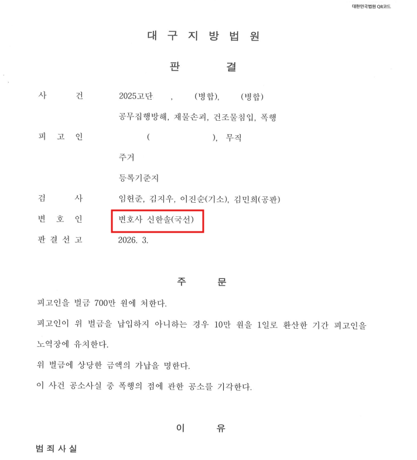

이 사건은 신한솔 변호사에게 국선변호로 배정된 형사사건이었습니다. 피고인은 집행유예 기간 중 공무집행방해, 재물손괴, 건조물침입, 폭행 혐의로 재판을 받게 되었습니다. 사건번호는 세 개였고, 죄명은 네 개였습니다.
피고인은 과거 교제 관계에 있던 피해자의 주거지 주변에서 재물손괴 사건을 일으켰고, 신고를 받고 출동한 경찰관들에게 저항하는 과정에서 공무집행방해 혐의도 함께 문제되었습니다. 별도로 건물에 들어가 CCTV 방향을 임의로 돌린 건조물침입·재물손괴 사건도 병합되었습니다. 또 다른 시점에는 과거 교제 관계에 있던 피해자와의 갈등 과정에서 발생한 폭행 사건도 있었습니다.
처음부터 무죄를 다툴 사건은 아니었습니다. 그러나 자백사건이라고 해서 결과가 자동으로 정해지는 것은 아닙니다. 인정해야 할 사실을 인정하게 하고, 피해회복을 실제 자료로 만들고, 불리한 보호관찰 자료를 법원이 다시 읽을 수 있는 구조로 정리해야 했습니다.
자백사건에서 더 위험한 순간은 인정해야 할 사건에서 애매하게 빠지려는 순간입니다. 피고인은 처음에 폭행 사실에 관하여 “때린 기억은 없다”는 식으로 말했습니다. 실제 인간관계에서는 피고인과 피해자의 감정, 책임, 사정이 단순하게 나뉘지 않는 경우도 있습니다. 그러나 수사와 재판으로 들어오면 피해자와 피고인은 더 이상 대등한 감정싸움의 당사자로 취급되지 않습니다.
그 상태에서 피고인이 “기억이 없다”, “그 정도는 아니었다”, “나도 억울하다”는 말을 앞세우면, 그 말이 정말로 억울한 피고인의 입에서 나온 것이라 하더라도 재판부에는 해명보다 변명으로 읽히기 쉽습니다. 신한솔 변호사는 피고인을 무리하게 몰아붙이지 않되, 다툴 수 없는 사실은 인정하고 피해자에게 고통을 준 상황 자체를 받아들이는 방향으로 사건을 정리했습니다.
보호관찰소의 통보 내용도 피고인에게 좋지 않았습니다. 사회봉사명령 이행 불성실, 수차례 경고, 보호관찰 기간 중 재범이라는 흐름으로 읽힐 수 있었습니다. 이 자료가 그대로 재판부에 읽히면 “사회 내 처우로는 어렵다”는 결론으로 이어질 수 있었습니다.
신한솔 변호사는 먼저 피고인의 진술 방향을 정리했습니다. 무리한 부인이나 피해자 비난으로 사건을 악화시키지 않도록 하고, 공소사실은 인정하되 범행의 경위와 피고인의 생활환경, 감정 조절의 어려움, 치료 필요성을 양형자료로 정리했습니다.
다음은 피해회복이었습니다. 피고인은 돈이 없었습니다. 그렇다고 피해회복을 포기할 수는 없었습니다. 신한솔 변호사는 재판부에 기일 속행을 요청했고, 피고인은 물류센터 상하차 등 일용직 노동을 통해 합의금과 형사공탁금을 마련했습니다.
합의가 가능한 피해자와는 합의를 진행했고, 처벌불원 의사까지 확보했습니다. 반면 피해 경찰관들과 같이 합의가 현실적으로 쉽지 않은 피해자들도 있었습니다. 공무집행방해 사건에서 피해 경찰관들이 합의에 적극적으로 응하는 경우는 많지 않습니다. 그렇다고 피해회복 시도를 포기할 수는 없었으므로, 합의가 어려운 피해자들에 대해서는 형사공탁으로 전환했습니다.
마지막으로 보호관찰 자료를 별도로 확인한 뒤, 재판 준비 이후의 변화를 중심으로 다시 정리했습니다. 피고인이 과거의 불안정한 생활환경에서 벗어나려 한 점, 불량한 교우관계를 끊고 생활을 정비하려 한 점, 직접 노동으로 피해회복 자금을 마련한 점, 사회 안에서 통제와 치료를 병행할 여지가 있는 점을 하나의 양형 구조로 제출했습니다.
구치소 안에서는 형사사건 이야기가 넘쳐납니다. 누가 몇 년을 받았다느니, 이 죄명은 보통 얼마라느니, 인정하면 국선 쓰고 합의금이나 마련하면 된다느니 하는 말들이 오갑니다. 하도 겪어본 것이 형사사건이다 보니, 그 말이 완전히 틀린 경우만 있는 것도 아닙니다. 변호사비보다 합의금이 중요한 사건은 실제로 있습니다.
그러나 거기서 멈추면 깊이가 너무 얕습니다. 감옥물을 좀 먹었다는 것만으로 형사재판을 알게 되는 것은 아닙니다. 본인이 처벌받아본 경험과, 다른 사람의 사건에서 실형 위험을 판단하는 능력은 전혀 다른 문제입니다.
이 사건은 신한솔 변호사가 국선변호인으로 수행한 사건이었습니다. 그런데도 “공소사실 인정하고 선처 구하면 끝”나는 사건이 아니었습니다. 국선이든 사선이든, 이런 사건을 인정사건이라는 말 하나로 밀어버리면 피고인은 그대로 실형 쪽으로 갈 수 있습니다.
대구지방법원은 피고인에게 벌금 700만 원을 선고했고, 폭행의 점은 피해자의 처벌불원 의사표시에 따라 공소기각되었습니다.
이 사건은 공소사실을 인정한 사건이었지만 간단한 사건은 아니었습니다. 집행유예 기간 중 여러 사건이 병합되어 있었고, 보호관찰소 통보도 불리했습니다. 피고인이 잘못된 방향으로 진술하거나 피해회복을 말로만 하거나 보호관찰 자료를 방치했다면, 실형 가능성이 높은 사건이었습니다.
실제로 재판부는 “법질서를 가벼이 여기는 성향이 관찰된다”는 취지를 판결문에 적었습니다. 그럼에도 인정 방향 설정, 피해회복, 합의와 형사공탁, 보호관찰 통보 반박이 양형 구조로 제출되었고, 피고인은 벌금형으로 사회에서의 삶을 이어갈 수 있게 되었습니다.
개인정보와 사건번호 일부를 비식별 처리한 판결문 일부입니다. 본 사례는 1심 판결 기준입니다.

공무집행방해·집행유예 중 재범·자백사건으로 재판을 앞두고 있습니까.
신한솔 변호사가 직접 기록과 양형자료의 방향을 검토합니다.
변호사 논평
공소사실을 다툴 수 없는 사건은 있습니다. 그러나 그런 사건일수록 인정 이후의 방향이 중요합니다. 무리하게 부인하면 반성은 변명으로 읽히고, 피해자를 탓하면 피해회복은 멀어지며, 보호관찰 자료를 방치하면 재판부는 피고인을 사회 안에서 다시 통제하기 어렵다고 볼 수 있습니다. 자백사건의 변론은 죄를 없애는 일이 아닙니다. 이미 생긴 사건이 피고인의 인생 전체를 무너뜨리지 않도록, 인정할 사실을 인정하게 하고 피해회복과 양형자료의 방향을 통제하는 일입니다.